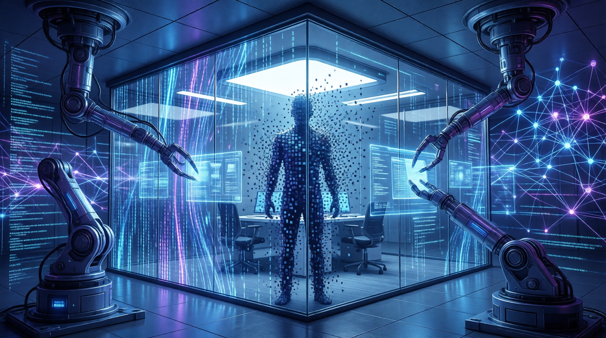

本文整理自《華爾街日報》、Business Insider、TrueUp三大裁員追蹤資料，截稿日為2026年5月18日。2026年美國企業裁員潮呈現兩極走勢：整體裁員較去年同期下滑50%，但科技業逆勢上升33%。AI自動化不僅影響基層員工，連白領、管理階層也難逃波及。

2026年美國企業裁員潮呈現兩極走勢：整體裁員較去年同期下滑50%，但科技業逆勢上升33%。AI自動化不僅影響基層員工，連白領、管理階層也難逃波及。
以下是2026年以來主要企業裁員一覽：
| 企業 | 裁員人數 | 宣布日期 | 主要原因 |
|---|---|---|---|
| UPS | 最多3萬人 | 1/27 | 亞馬遜減少使用UPS配送、重整物流網絡 |
| 亞馬遜 | 1.6萬人 | 1/27 | 減少官僚層級（2025年10月已裁1.4萬人） |
| 甲骨文 | 約3萬人 | 3/30起 | 融資建AI資料中心，需從其他部門擠出資金 |
| Meta | 8,000人 | 4/22 | 重心轉向AI基礎設施，元宇宙優先順序降低 |
| 雅詩蘭黛 | 9,000-1萬人 | 4/30 | 實體零售縮編，轉向亞馬遜、TikTok Shop電商 |
| 海尼根 | 5,000-6,000人 | 2/10 | 歐美啤酒市場萎縮、歐洲廠房整併 |
| Block | 4,000人（4成員工） | 2/25 | 創辦人Jack Dorsey：AI工具改變公司運作方式 |
5月新一波裁員出現明顯特徵：砍管理職、扁平化組織。從Coinbase、Cloudflare到Walmart的內部備忘錄都用類似句型：AI與自動化改變了「需要的人力配置」，因此組織必須跟著重建。
| 企業 | 裁員人數 | 宣布日期 | 特殊之處 |
|---|---|---|---|
| Coinbase | 700人（14%） | 5/4 | 「不再有純管理職，所有領導者必須親自動手做事」 |
| PayPal | 4,760人（20%） | 5/4 | 2-3年內裁掉2成，獲利下滑進行支付業務轉型 |
| Cloudflare | 1,100人（20%） | 5/7 | 內部AI使用量暴增超6倍，需重新想像每個流程 |
| Cisco | 約4,000人（5%） | 5/13 | AI基礎設施訂單目標從50億增至90億美元 |
| Walmart | 約1,000人 | 5/11 | 讓組織更扁平、責任更清楚 |
| Starbucks | 300人 | 5/14 | 集中在科技、行銷、財務、研發部門 |
AI是這一波裁員潮的最大公約數，但並非所有裁員都歸咎於AI。例如Estée Lauder是通路轉型、UPS是亞馬遜減少採購、Heineken是市場萎縮、Epic Games則是《要塞英雄》活躍度下滑，與AI無直接關聯。
2026年1-4月美企宣布裁員30萬749人，較去年同期下滑50%，主因是2025年基期受聯邦裁員墊高。
科技業今年已裁逾8.5萬人，較去年同期增加33%，AI投資與自動化是重要推力之一。
Coinbase、Cloudflare、Walmart相繼裁撤純管理職，「所有領導者必須親自動手做事」成新趨勢。
AI是最大公約數，但Estée Lauder通路轉型、Heineken市場萎縮等與AI無直接關聯。
| 企業 | 裁員人數 | 宣布日期 | 是否AI相關 | 主因 |
|---|---|---|---|---|
| UPS | 最多3萬人 | 1/27 | ❌ 非AI | 亞馬遜減少UPS配送、重整物流網絡 |
| 亞馬遜 | 1.6萬人 | 1/27 | ⚠️ 間接 | 減少官僚層級，AI提升效率後無需那麼多管理層 |
| 甲骨文 | 約3萬人 | 3/30 | ✅ 直接 | 大舉融資興建AI資料中心，需從其他部門擠出資金 |
| Meta | 8,000人 | 4/22 | ✅ 直接 | 重心轉向AI基礎設施與人才，元宇宙優先順序降低 |
| Cloudflare | 1,100人 | 5/7 | ✅ 直接 | 內部AI使用量暴增超6倍，「需重新想像每個流程」 |
| Coinbase | 700人（14%） | 5/4 | ✅ 直接 | 「AI讓過去一週的工作，工程師幾天就能完成」 |
| Cisco | 約4,000人 | 5/13 | ✅ 直接 | 把資源重新分配到AI、資安等高成長業務 |
「不再有純管理職，所有領導者必須親自動手做事。過去要花一週的工作，現在工程師幾天就能完成。」
— Brian Armstrong，Coinbase 執行長（2026年5月4日）2026年的裁員潮揭示了一個重要趨勢：AI正在重塑組織結構。以往裁員主要影響基層工作者，如今白領、管理階層也成為目標。Coinbase執行長阿姆斯壯的宣言代表了一種新興管理哲學：「每個領導者都必須是實際執行者」。
這種變化帶來深遠影響：當AI能以數倍效率完成過往需要多人執行的工作，企業所需的管理層級大幅縮減。專家預測，這種「扁平化浪潮」將在未來數年持續蔓延，無論是科技巨頭還是傳統企業都難以避免。